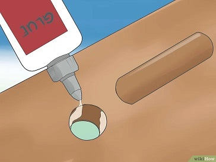

BRICOMANITAS
1º Reúne tus materiales.Necesitarás paneles de 5 x 5 cm (2 X 2 pulgadas) y 2,5 x 10 cm (1 X 4 pulgadas), un panel de madera contrachapada de 4 cm (1,5") de grosor, pegamento de madera, tornillos para madera de 6,35 cm (2,5"), un taladro con una broca de 0,64 cm (1/4") y una sierra circular.
2º Corta los lados. Necesitarás cortar:
Dos piezas de 42 cm (16,5") de 2 X 2
Dos piezas de 94 cm (37") de 2 X 2
Dos piezas de 36 cm (14") de 1 X 4
Una pieza de 36 cm (14") de 1 X 4, luego divídela a lo largo para hacer 2 piezas largas
3º Ensambla los lados. Realiza agujeros de 0,64 cm (1/4") con el taladro hasta la mitad de los postes de 42 cm, 3 cm (1 1/6”) desde la parte superior y otro a 6 cm (2 1/3”) desde la parte superior. Realiza agujeros de 0,64 cm espaciados de forma idéntica en ambos extremos de los postes de 1 X 4. Realiza agujeros de 0,64 cm (1/4”) a la mitad de los postes de 94 cm (37”), 39 cm (15 1/3”) desde la parte inferior y luego 36 cm (14 1/6”) desde la parte inferior. Pega e inserta los tarugos en los agujeros. Luego puedes ensamblar todas las piezas para formar los lados de la silla. Las piezas de los lados deben estar al ras con la parte superior de los postes cortos. Desliza la separación de 10,16 cm (4”) de 1 X 4 desde abajo en cada lado de la pieza y atorníllala con los tornillos para madera.
Realizado por Joan